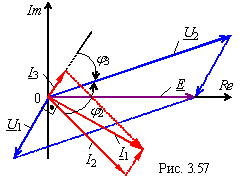
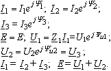

6. Напряжения ветвей:
7. Векторная диаграмма токов и напряжений цепи представлена на рис.3.57;
при этом:

Для цепи (рис. 2.55) с параметрами: е = Еmsinωt; R2, R3, L2, C1 и С3 определить комплексы токов I1, I2, I3 и комплексы напряжений U1 и U2 = U3 ветвей и построить векторную диаграмму токов и напряжений в комплексной плоскости. Решение.
4. Комплекс общего тока цепи
I1 = E/Z, где E =
; Ye = 0.
5. Применяя правило делителя тока в комплексной форме, находим комплексы токов ветвей:
| |||||
|
|
|||||